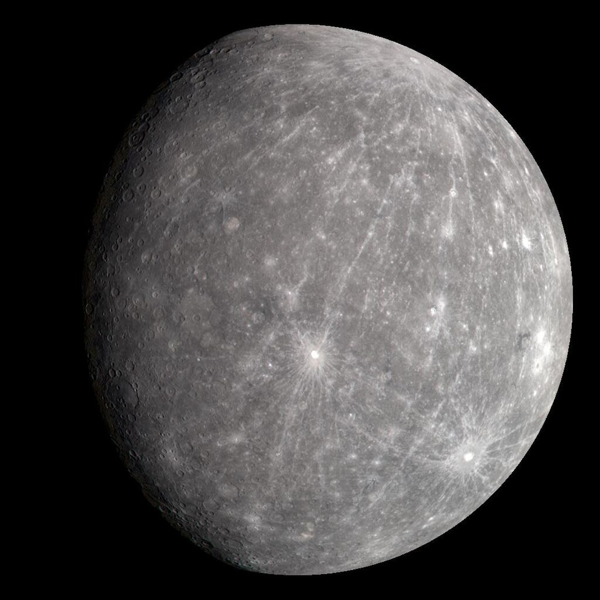
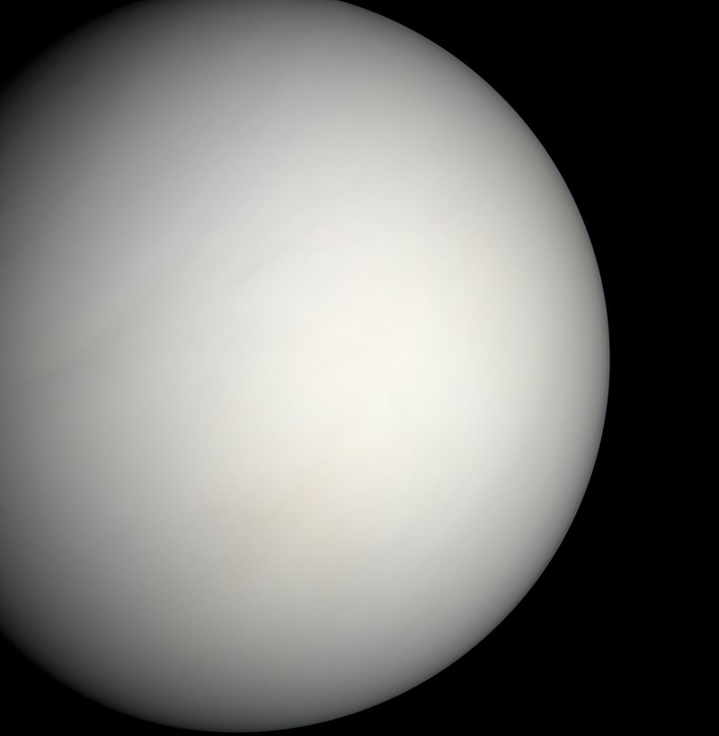

The Solar System and its Wonders
Discover fascinating details about the planets that make up our Solar System and their significance in the cosmos.
Mercury

Mercury is the closest planet to the Sun, with an average distance of about 36 million miles (58 million kilometers). It has a heavily cratered surface and no significant atmosphere, which makes it one of the hottest and coldest places in our solar system.
Read more
Venus

Venus is often referred to as the "Morning Star" or the "Evening Star." It's the second planet from the Sun and is known for its thick atmosphere of carbon dioxide that creates a runaway greenhouse effect, making it the hottest planet in our solar system.
Read more
Earth

Our home planet Earth is the only known planet to support life. It has a diverse range of ecosystems and is characterized by its blue oceans and abundant plant and animal life. Earth is the third planet from the Sun and has a unique atmosphere that enables life to flourish.
Read more
Mars

Mars, often called the "Red Planet," is the fourth planet from the Sun. It has a thin atmosphere primarily composed of carbon dioxide. Mars is known for its polar ice caps, vast deserts, and the tallest volcano and deepest canyon in the solar system.
Read more
Jupiter

Jupiter is the largest planet in our Solar System, with a diameter of about 86,881 miles (139,822 kilometers). It's primarily composed of hydrogen and helium and has a powerful magnetic field. Jupiter's iconic feature is its Great Red Spot, a giant storm that has been raging for centuries.
Read more
Saturn

Saturn is famous for its stunning ring system, which is composed of icy particles and debris. It's the sixth planet from the Sun and has a unique hexagonal storm at its north pole. Saturn's rings are made up of countless individual ringlets that vary in size and brightness.
Read more
Uranus

Uranus is a unique planet that rotates on its side, with its axis nearly parallel to its orbit around the Sun. It has a blue-green color due to the presence of methane in its atmosphere. Uranus has a set of thin, faint rings and a total of 27 known moons.
Read more
Neptune

Neptune is the eighth and farthest planet from the Sun. It's characterized by its deep blue color, which is a result of methane in its atmosphere. Neptune has strong winds and a series of dark spots, similar to Jupiter's Great Red Spot. It has a total of 14 known moons.
Read more